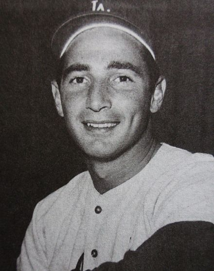

|  |
Accolades:
|
|
Sanford Koufax (/ˈkoʊfæks/; born Sanford Braun; December 30, 1935) is an American former professional baseball left-handed pitcher. He pitched 12 seasons for the Brooklyn/Los Angeles Dodgers of Major League Baseball (MLB) from 1955 to 1966. Koufax, at age 36 in 1972, became the youngest player ever elected to the Baseball Hall of Fame. He has been hailed as one of the greatest pitchers in baseball history. Koufax's career peaked with a run of six outstanding years from 1961 to 1966, before arthritis in his left elbow ended his career prematurely at age 30. He was an All-Star for six seasons and was the National League's Most Valuable Player in 1963. He won three Cy Young Awards in 1963, 1965, and 1966, by unanimous votes, making him the first three-time Cy Young winner in baseball history and the only one to win three times when one overall award was given for all of Major League Baseball instead of one award for each league. Koufax also won the NL Triple Crown for pitchers those same three years by leading the NL in wins, strikeouts, and earned run average. |
|